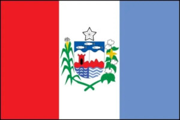

O estado de Alagoas, na Região Nordeste, é um dos menores em área do país. Possui hoje 3,35 milhões de habitantes, sendo a sua capital, Maceió, o município mais populoso.
Alagoas é um estado brasileiro que compõe a Região Nordeste, com capital no município de Maceió. Seu relevo é formado por depressões e planaltos, e os climas encontrados no estado são semiárido e tropical. A atual população alagoana é de pouco mais de 3,35 milhões de habitantes, vivendo a maioria nas cidades. Atualmente, a economia alagoana se destaca pela produção de cana-de-açúcar e pela indústria ligada a esse cultivo.